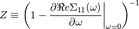
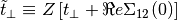
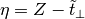
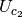
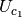
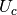
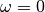

The insulator transition order parameter¶
The low energy expansion is used to define an order parameter for the Dimer-Mott transition. Using the renormalized quantities for the Half-filling Particle-hole Symmetric case.


The order parameter is defined as

# Created Mon Mar 7 19:19:04 2016
# Author: Óscar Nájera
from __future__ import division, absolute_import, print_function
import os
from math import log, ceil
import numpy as np
import matplotlib.pyplot as plt
import dmft.common as gf
import dmft.dimer as dimer
import dmft.ipt_imag as ipt
plt.matplotlib.rcParams.update({'axes.labelsize': 22,
'xtick.labelsize': 14, 'ytick.labelsize': 14,
'axes.titlesize': 22, 'legend.fontsize': 14,
'mathtext.fontset': 'cm'})
def estimate_zero_w_sigma_U_vs_tp(tpr, u_range, beta, phase):
sd_zew, so_zew = [], []
tau, w_n = gf.tau_wn_setup(
dict(BETA=beta, N_MATSUBARA=max(2**ceil(log(8 * beta) / log(2)), 256)))
u_range = u_range if phase == 'met' else u_range[::-1]
save_file = 'dimer_ipt_{}_Z_B{}.npy'.format(phase, beta)
if os.path.exists(save_file):
return np.load(save_file)
for tp in tpr:
filestr = 'disk/phase_Dimer_ipt_{}_B{}/tp{:.3}/giw.npy'.format(
phase, beta, tp)
gfs = np.load(filestr)
for i, u_int in enumerate(u_range):
giw_d, giw_o = 1j * gfs[i][0], gfs[i][1]
g0iw_d, g0iw_o = dimer.self_consistency(
1j * w_n, giw_d, giw_o, 0., tp, 0.25)
siw_d, siw_o = ipt.dimer_sigma(u_int, tp, g0iw_d, g0iw_o, tau, w_n)
sd_zew.append(np.polyfit(w_n[:2], siw_d[:2].imag, 1))
so_zew.append(np.polyfit(w_n[:2], siw_o[:2].real, 1))
sd_zew = np.array(sd_zew).reshape(len(tpr), len(u_range), -1)
so_zew = np.array(so_zew).reshape(len(tpr), len(u_range), -1)
np.save(save_file, (sd_zew, so_zew))
return sd_zew, so_zew
Metal¶
Uc1 = np.array([(0.0, 2.6), (0.05, 2.58), (0.07, 2.55),
(0.1, 2.5), (0.12, 2.47), (0.15, 2.42), (0.17, 2.39),
(0.2, 2.34), (0.23, 2.29), (0.25, 2.25), (0.27, 2.19),
(0.3, 2.135), (0.32, 2.115), (0.35, 2.03),
(0.4, 1.93), (0.45, 1.82), (0.47, 1.785),
(0.5, 1.73), (0.55, 1.65),
(0.6, 1.6), (0.7, 1.5)]).T
Uc = np.array([(0.7, 1.5), (0.75, 1.45),
(0.8, 1.32), (0.86, 1.16),
(0.9, 1), (0.98, 0.6), (0.99, 0.37), (1, 0)]).T
Uc2 = np.array([(0, 3.41), (0.02, 4), (0.04, 4.2), (0.08, 4.2),
(0.12, 4.1), (0.18, 4), (0.3, 3.5), (0.37, 3.15),
(0.42, 2.8), (0.61, 1.87), (0.71, 1.52)]).T
TPR = np.arange(0, 1.1, 0.02)
UR = np.arange(0, 4.5, 0.1)
f, ax = plt.subplots()
x, y = np.meshgrid(TPR, UR)
sd_zew, so_zew = estimate_zero_w_sigma_U_vs_tp(TPR, UR, 1000., 'met')
dw_sig11 = np.ma.masked_array(sd_zew[:, :, 0], sd_zew[:, :, 1] < -0.1)
zet = 1 / (1 - dw_sig11.T)
sig11_0 = np.ma.masked_array(so_zew[:, :, 1], sd_zew[:, :, 1] < -0.1)
tpp = (TPR + so_zew[:, :, 1].T)
order = zet - tpp * zet
order = np.abs(zet - tpp * zet)
# order = np.ma.masked_array(order, order < -0.01)
# cs = plt.contourf(x, y, order, 31)
plt.pcolormesh(x, y, order)
# plt.colorbar()
cs = plt.contour(x, y, order, 15, colors='k')
plt.clabel(cs, inline=1, fontsize=10, colors='k')
plt.xlabel(r'$t_\perp/D$')
plt.ylabel(r'$U/D$')
plt.grid()
plt.plot(Uc1[0], Uc1[1] + 0.03, lw=4, color='C6')
plt.plot(Uc2[0], Uc2[1], lw=4, color='C2')
plt.plot(Uc[0], Uc[1] + 0.03, lw=4, color='C7')
plt.savefig('IPT_Uc2_orderparameter.png')
Traceback (most recent call last):
File "/home/oscar/dev/sphinx-gallery/sphinx_gallery/gen_rst.py", line 453, in execute_code_block
exec(code_block, example_globals)
File "<string>", line 21, in <module>
File "<string>", line 34, in estimate_zero_w_sigma_U_vs_tp
File "/home/oscar/.virtualenvs/dev3/lib/python3.6/site-packages/numpy-1.13.0-py3.6-linux-x86_64.egg/numpy/lib/npyio.py", line 370, in load
fid = open(file, "rb")
FileNotFoundError: [Errno 2] No such file or directory: 'disk/phase_Dimer_ipt_met_B1000.0/tp0.0/giw.npy'
Insulator¶
sd_zew, so_zew = estimate_zero_w_sigma_U_vs_tp(TPR, UR, 1000., 'ins')
dw_sig11 = np.ma.masked_array(sd_zew[:, :, 0], sd_zew[:, :, 1] < -0.1)
zet = 1 / (1 - dw_sig11.T)
sig11_0 = np.ma.masked_array(so_zew[:, :, 1], sd_zew[:, :, 1] < -0.1)
tpp = (TPR + so_zew[:, :, 1].T)
order = zet - tpp * zet
order = np.abs(zet - tpp * zet)
# order = np.ma.masked_array(order, order < -0.01)
order = order[::-1]
plt.figure()
plt.pcolormesh(x, y, order)
# plt.colorbar()
cs = plt.contour(x, y, order, 15, colors='k')
plt.clabel(cs, inline=1, fontsize=10, colors='k')
plt.xlabel(r'$t_\perp/D$')
plt.ylabel(r'$U/D$')
plt.grid()
plt.plot(Uc1[0], Uc1[1] + 0.03, lw=4, color='C6')
plt.plot(Uc2[0], Uc2[1], lw=4, color='C2')
plt.plot(Uc[0], Uc[1] + 0.03, lw=4, color='C7')
merge_band = np.array([(0.45, 1.9), (0.5, 2.3), (0.55, 3), (0.58, 3.2)]).T
plt.plot(merge_band[0], merge_band[1], 'C1o--')
selfenergy = np.array([(0.45, 1.9), (0.55, 2.3), (0.9, 3), (1.08, 3.65)]).T
plt.plot(selfenergy[0], selfenergy[1], 'C3s--')
W_vanish = np.array([(0.5, 1.73), (0.9, 2.03), (1.08, 2.64)]).T
plt.plot(W_vanish[0], W_vanish[1], 'C8d--')
plt.savefig('IPT_Uc1_orderparameter_ins.png')
The green thick line is . The purple line is  and the grey line is  The orange dashed line marks when the Hubbard band breaks/joins. The dashed red when the pole of the self-energy is visible inside the gap. The dashed yellow when the Hubbard band has the W resonance which can not be parametrized from the Fermi Liquid theory at .
Total running time of the script: ( 0 minutes 0.001 seconds)